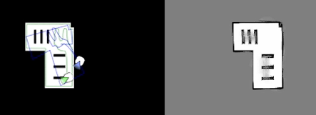
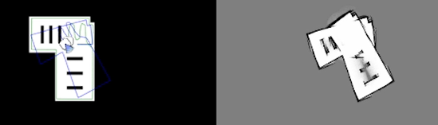
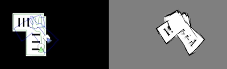

Silvia Calvo Cabello
- El sensor proporciona 360 lecturas, una por cada grado.
- El láser 0 apunta hacia delante y el láser 270 hacia la derecha.
- El alcance máximo del sensor es de 3.5 metros.
- Se necesita la orientación del robot para los calculos del LIDAR a coordenadas, esto es la parte que destaca al cambiar el ruido de la odometria en este ejercicio.
-
Filtro de Observaciones Independientes:
Para garantizar la validez matemática del filtro bayesiano, es crucial que las medidas sensoriales que se integren en el mapa sean estadísticamente independientes. En el código, esto se aproxima descartando lecturas redundantes cuando el robot está prácticamente quieto. La funciónmapping()evalúa la posición actual frente a la última posición registrada. Solo si el robot se ha desplazado una distancia suficiente (ej. > 0.2 metros) o ha rotado un ángulo significativo (ej. > 0.15 radianes), se acepta la nueva lectura del láser. Esto evita sobreescribir la misma celda repetidamente con la misma información estática. -
Modelo Sensorial y Geometría Axial:
Dado que el sensor láser tiene una apertura angular muy estrecha, se asume una aproximación de geometría axial perfecta. Para cada rayo del LIDAR válido, se calcula el punto de impacto en el mundo. El haz del láser se modela como una línea recta estricta desde el robot hasta el obstáculo utilizando el algoritmo de Bresenham. Todas las celdas atravesadas por esta línea se consideran libres de obstáculos, mientras que la celda final se considera ocupada. -
Integración mediante la Regla de Bayes (Log-Odds):
El algoritmo utiliza el modelo de Log-Odds. Esto permite aplicar la regla de Bayes mediante simples sumas y restas de evidencias:- Zona Libre (
L_FREE = -0.4): A cada celda atravesada por el rayo se le resta este valor, disminuyendo su probabilidad de estar ocupada. - Zona Ocupada (
L_OBS = 1.2): Al detectar un impacto, se suma este valor.
- Zona Libre (
-
Mecanismos de Saturación:
El código incorpora límites de saturación para evitar valores extremos: L_MAX = 10.0 y L_MIN = -10.0. Gracias a esto , el mapa es dinámico y puede reaccionar rápidamente ante nueva información o correcciones, evitando una inercia probabilística excesiva. -
Recorrido del contorno (pared exterior):
Primero, el robot encuentra la pared más al Este de su posición y empieza a recorrer todo el borde por el interior. Hacemos esto para conseguir el contorno del mapa completo antes de pasar al centro. Mientras se mueve, va marcando las celdas por donde pasa como visitadas. Además, marca como ocupadas 3 celdas más hacia la parte de fuera. Esto sirve para delimitar la zona interior y crear una barrera de seguridad para que el robot no intente salir. -
Recorrido del espacio interior:
Una vez completada la pared exterior, el robot pasa a recorrer el interior combinando dos métodos de búsqueda:- Búsqueda simple de la celdilla de al lado: El robot intenta avanzar moviéndose a una casilla que tenga pegada y que esté libre. Para elegirla sigue siempre este orden de prioridad: Norte, Este, Sur, Oeste (N, E, S, O). El motivo de este orden es que al acabar la pared en la zona Este, el robot buscará ir hacia la esquina de arriba a la derecha para empezar a hacer el recorrido de forma ordenada desde allí.
- Búsqueda inteligente global (BFS): Cuando el robot llega a un punto donde no tiene ninguna casilla libre a su lado, hace una búsqueda inteligente usando el algoritmo de Búsqueda en Anchura (BFS). Este algoritmo encuentra la celda libre más cercana de todo el mapa y manda al robot hacia allá para que siga trabajando hasta completarlo todo.
- VIDEO DE MUESTRA
La práctica consiste en generar un mapa del entorno a partir de la información obtenida por el sensor LIDAR del robot. El objetivo principal es desarrollar un algoritmo de navegación capaz de explorar de forma autónoma un área de almacén mientras construye un mapa probabilistico preciso del entorno utilizando los datos del láser. También se realizará la comprativa de este mismo algoritmo empeorando la localizacion del robot, para ver los efecto en la genereracion del mapa.
Para construir el mapa a partir de los datos del láser es necesario conocer varios parámetros fundamentales:
El algoritmo implementado para la construcción del mapa de ocupación probabilístico se basa en un enfoque de rejilla (Gridmap) utilizando la regla de Bayes (mediante la técnica de Log-Odds) para fusionar las evidencias sensoriales. El proceso de "muestreo" y actualización se divide en las siguientes etapas clave requeridas:
Para que el robot complete el mapa haciendo un recorrido correcto, divide el entorno en celdillas. Así puede saber exactamente por qué zonas ya ha pasado y cuáles le faltan. El recorrido se divide en dos fases:
Para hacer la comparativa, se ha configurado el sistema para que el robot se mueva siempre usando la odometría sin ruido. De esta manera, el robot hace exactamente el mismo camino en todas las pruebas. Lo que cambia en cada caso es el ruido de la odometría que se usa para dibujar el mapa, lo que permite comparar bien cómo afectan los distintos niveles de ruido a las medidas tomadas.
Como se puede ver en las imágenes de abajo, solo la localización sin ruido consigue calcular el mapa de forma correcta. Las otras opciones crean un mapa que se vuelve cada vez más borroso a medida que pasa el tiempo. Esto pasa porque el robot empieza a colocar medidas de obstáculos encima de zonas que en realidad están libres, lo que termina ensuciando todo el mapa.
Localización sin ruido

Localización con ruido medio

Localización con ruido alto

Video sin ruido
Video con medio ruido
Video con mucho ruido